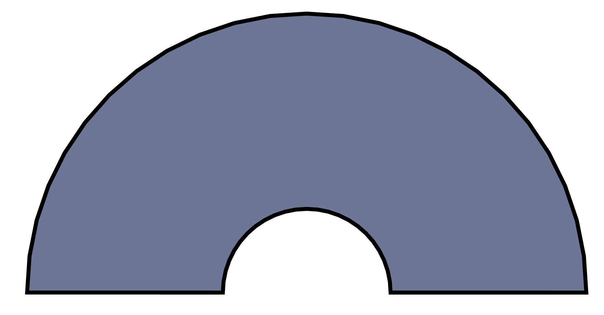
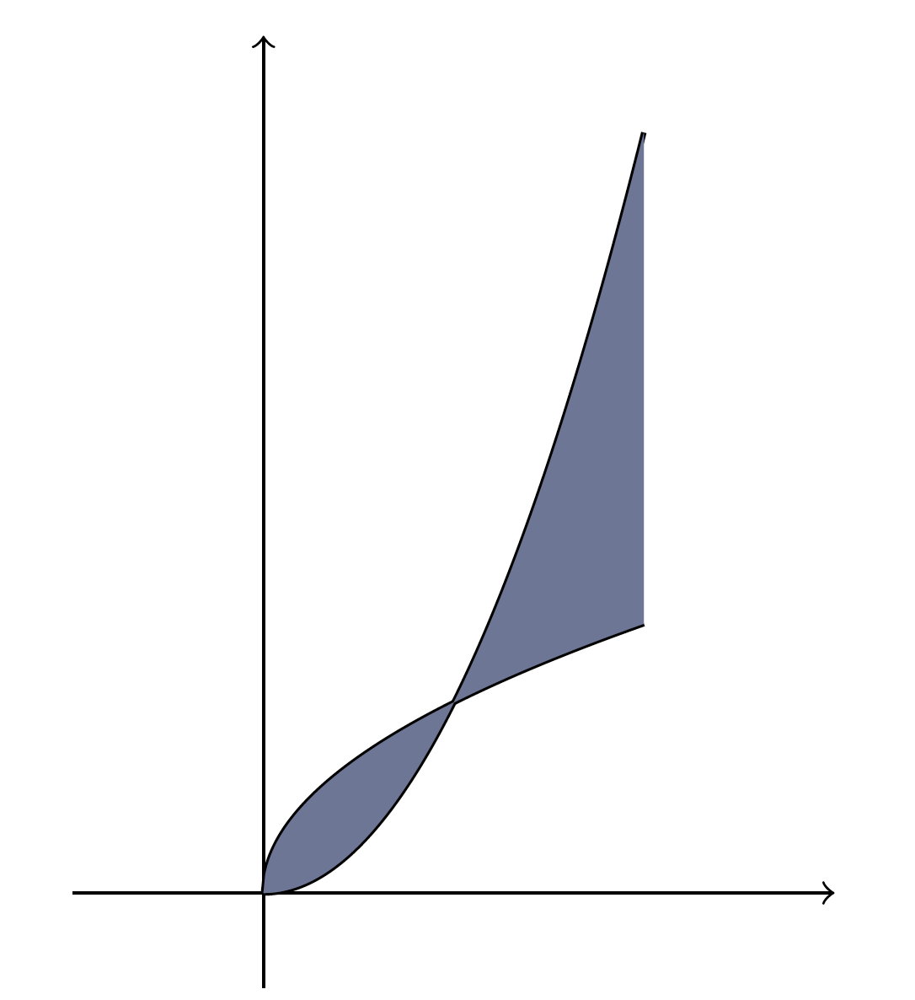
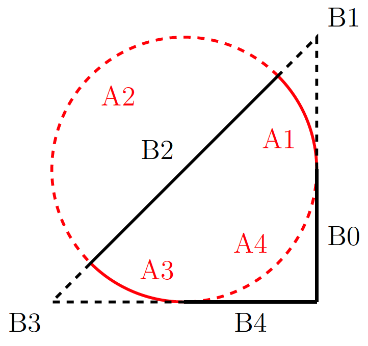
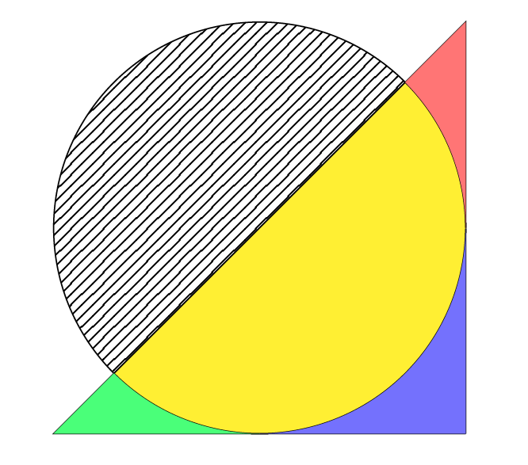

1.2 Shade an Area
1.2.1 The “fill” option in \draw
Required package(s): \usepackage{tikz}.
The fill= option in the \draw command shades the region enclosed by a curve. If the curve is not a loop, Tikz will automatically connect the head and the tail of the curve to make a loop and fill the enclosed area by the specified color.
- The predefined colors are black, blue, brown, cyan, gray, green, lime, magenta, olive, orange, pink, purple, red, teal, violet, white, yellow.
- Customized colors should be defined before been called. In the example below, the enclosed region is filled by a color named “cool”, defined in the first line of the codes using a hex RGB code 6E7696.
\definecolor{cool}{HTML}{6E7696} % Define a color named cool
\begin{figure}[htbp]
\begin{tikzpicture}[scale = 1]
\draw [fill=cool] (1,0)
-- plot[domain=0:pi] ({cos(\x r)}, {sin(\x r)})
-- plot[domain=pi:0] ({0.3*cos(\x r)}, {0.3*sin(\x r)})
-- cycle;
\end{tikzpicture}
\end{figure}
1.2.2 Fill by \tikzfillbetween
Required package(s): \usepackage{tikz, pgfplots}, \usepgfplotslibrary{fillbetween}.
Another convenient way to shade an area between two curves is to use the \tikzfillbetween command from the pgfplots library.
name path=A: Name the first curve as A.name path=B: Name the second curve as B.- To hide the curves A and B, use
\pathinstead of\draw.
\definecolor{cool}{HTML}{6E7696} % Define a color named cool
\begin{figure}[htbp]
\begin{tikzpicture}[scale = 1]
\draw [->] (-1, 0) -- (3, 0); % x-axis
\draw [->] (0, -0.5) -- (0, 4.5); % y-axis
% Use \path instead of \draw in the next two lines will hide the curves.
\draw [name path=A, domain=0:2, samples=200, thick] plot({\x}, {sqrt(\x)});
\draw [name path=B, domain=0:2, samples=200, thick] plot({\x}, {\x^2});
\tikzfillbetween[of=A and B]{cool}; % Fills the space between A and B.
\end{tikzpicture}
\end{figure}
1.2.3 Fill by Intersection Segments
Required package(s): \usepackage{tikz, pgfplots}, \usepgfplotslibrary{fillbetween}, \usetikzlibrary{patterns}.
When two curves intersect, they can create multiple intersection segments. For example, the left panel below shows all the intersection segments when a circle meets a triangle.
The segment index depends on the flow of the parametric curves. For example, A1 and A2 are the segments on curve A right after the first and the second intersections, respectively. B0 is the segment on curve B right before the first intersection. We can always repeatedly use the draw command, for example, \draw [red, very thick, intersection segments={of=A and B, sequence={A1}}]; to discern a segment, by repeated changing the name of segment inside sequence={ }.
Once we have identified all the segments, we can use them to shade a specific region accordingly. The following codes produce the right panel below.
name path=Aassigns curve A.samples=362draw a better circle.name path=Bassigns curve B.- In the
\fillcommand, the optionsequence=outlines the shaded region. red!50means 50% red.[inverse]means the segment goes against the flow of the parametric curve.pattern=specifies the angle of the shaded lines, which requires thepatternslibrary from tikz. `
\begin{tikzpicture}[scale=2]
\draw [name path=A, domain=0:2*pi, samples=362] plot({cos(\x r)}, {sin(\x r)});
\draw [name path=B] (1, -1) -- (1, 1) -- (-1, -1) -- (1,-1);
\fill [yellow, intersection segments={of=A and B, sequence={A1--B2--A3--A4}}];
\fill [red!50, intersection segments={of=A and B, sequence={A1--B1[reverse]}}];
\fill [green!50, intersection segments={of=A and B, sequence={B3--A3[reverse]}}];
\fill [blue!50, intersection segments={of=A and B, sequence={A4[reverse]--B4}}];
\fill [black!50, intersection segments={of=A and B, sequence={A2--B2[reverse]}}, pattern= north east lines];
\end{tikzpicture}